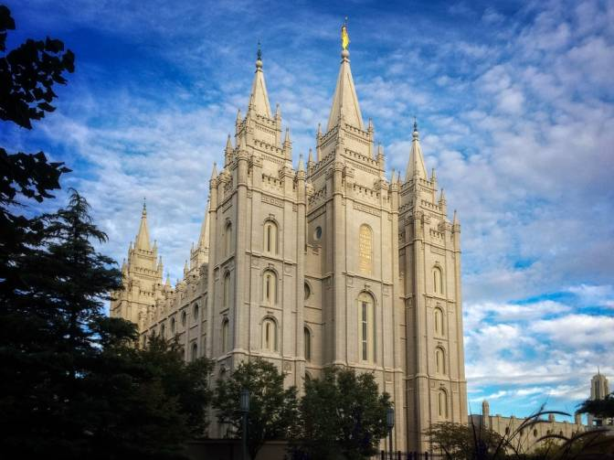
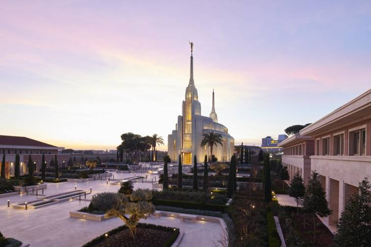
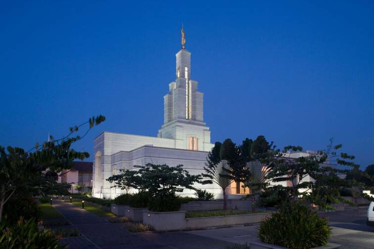
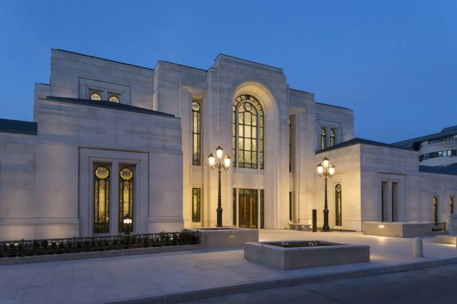
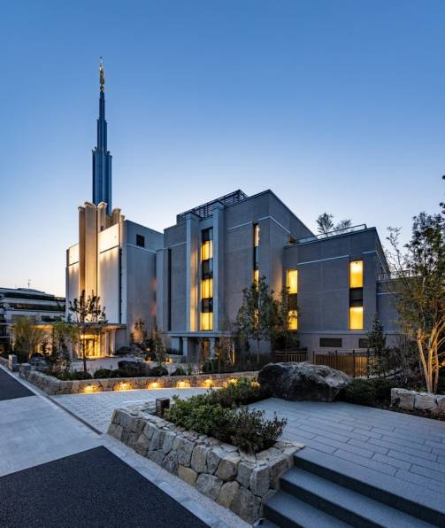

Temple Album
Home
Old
New
Large
Small
Temple Album

Salt Lake Temple
Provo City Center Temple

Rome Italy Temple

Accra Ghana Temple
Lagos Nigeria Temple
London England Temple

Paris France Temple
Manila Philippines Temple

Tokyo Japan Temple